AutoLab: Can Frontier Models Solve Long-Horizon Auto Research and Engineering Tasks?
AUTOLAB 把“自动研究/工程能力”定义为持续数小时的 closed-loop optimization：agent 必须读代码、改实现、跑实验、看指标、再迭代。论文构造 36 个真实任务并评测 17 个 frontier models，核心结论是：最终成绩更受 persistence、time awareness 和 empirical feedback loop 影响，而不是一次性初始方案质量。
claude-opus-4.6 Overall Avg@3，领先第二名 gemini-3.1-pro 的 0.50。1. 研究动机：为什么短任务 benchmark 不够
论文关注的是“实践中的研究与工程循环”：提出修改、执行实验、读取指标、修正方向。这个能力在单轮问答、一次性 coding benchmark、甚至短交互 agent benchmark 中都很难被测到，因为真正困难的部分是长期保持有效迭代，而不是第一步写出看似合理的 patch。
现有评测的盲区
HumanEval、LiveCodeBench、SWE-bench 等更偏 one-shot 或短轨迹；GAIA、AgentBench、Terminal-Bench 虽然引入工具调用，但通常不把数小时 empirical optimization 作为核心对象。
长时程任务的额外难点
agent 要管理 wall-clock time、上下文、算力、局部评估噪声和错误回滚；失败常来自 premature termination、timeout/context exhaustion 或提交流程错误，而不只是代码不会写。
AUTOLAB 的定位
每个任务给一个正确但低效的 baseline，目标是在固定 budget 内持续优化。score 是连续值，因此能度量 partial progress，而不是只看 pass/fail。
两个历史障碍
- 最强展示常依赖模型专属 harness、工具与搜索策略，难以分离 model capability 与 system engineering。
- 已有 long-horizon benchmarks 多集中在单一领域，如 ML engineering、kernel optimization 或工程任务，缺少跨域统一协议。
论文的核心假设
如果要评估 autonomous research agents，必须同时固定 action interface、task budget、scoring function 和 verifier，观察模型能否在同一环境里持续利用 empirical feedback。
2. 方法：任务形式、连续评分与防 hack verifier
AUTOLAB 的基本单元不是一道静态题，而是一个 executable optimization environment。agent 可以自由读代码、编辑、运行 local evaluator、profile、debug，并在最终提交时由 held-out verifier 给出 metric，再映射成标准化 score。
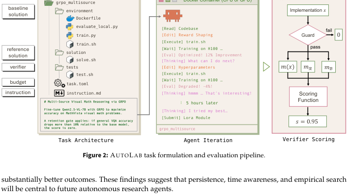
Task package
包含代码库、baseline、local evaluation script、instruction、metadata、不可见 held-out tests 与 reference solution。
Agent loop
读代码、修改、运行、等待训练或 benchmark、根据结果继续调整；episode 可能持续 2 到 12 小时。
Verifier
最终实现必须通过 correctness gate、immutable-file check、sealed test inputs，再把 raw metric 转成统一分数。
2.1 Log-stretch scoring
对 runtime、throughput 这类跨数量级变化的 performance tasks，设实现 \(x\) 的 raw metric 为 \(m(x)\)，baseline 与 reference 分别为 \(m_B\)、\(m_R\)。低值更好时，论文使用：
\[ s(x)=\operatorname{clip}\left(\frac{1}{2}\cdot\frac{\log(m_B/m(x))}{\log(m_B/m_R)},0,1\right). \]minimum-improvement gate 使得未超过 baseline 的提交得 0 分；在 reference performance 处 \(s=0.5\)，接近 practical optimum 时趋近 1。高值更好任务使用方向相反的 analogue。
2.2 Anchored linear scoring
对自然有界的 quality metrics，使用 baseline 与 reference 之间的线性插值：
\[ s(x)=\operatorname{clip}\left(\frac{m_B-m(x)}{m_B-m_R},0,1\right), \]若 metric 越高越好则方向相反。Puzzle 中的 smallest_game_player、safety_router 使用 implicit \(m_R=0\) 的参数量压缩形式；resnet_bit_flip 还要求 accuracy 低于 12% 才能拿正分。
2.3 Dominance metric
除 Avg@3 与 Best@3 外，论文用 tournament-style Dominance 衡量模型在所有任务上相对其他模型的胜率。设 \(M\) 为模型集合、\(T\) 为任务集合，\(s_{m,t}\) 是模型 \(m\) 在任务 \(t\) 的 Avg@3：
\[ \mathrm{Dominance}(m)=\frac{1}{|T|(|M|-1)}\sum_{t\in T}\sum_{\substack{o\in M\\o\ne m}}\left(\mathbf{1}[s_{m,t}>s_{o,t}]+\frac{1}{2}\mathbf{1}[s_{m,t}=s_{o,t}]\right). \]这个指标降低了单个高杠杆任务或不同 reward scale 对总排名的影响。
Quality control
- 每个任务至少由 2 名独立专家和一个 format audit agent 审核。
- 审核维度包括 validity、solvability、integrity、measurement stability。
- reference solution 需要在指定 hardware/budget 下可靠达到目标。
Anti-reward-hacking
- sealed verifier，不暴露 held-out inputs/reference outputs。
- ML tasks 先过 correctness gate，再记录优化 metric。
- critical files 做 SHA-pinned immutable check。
- 构造阶段运行 adversarial agent 搜索 shortcut 或 verifier exploit。
3. 实验设计与复现细节
主实验固定 HARBOR framework 和 terminus-2 agent harness。每个模型在每个任务上运行 3 个 independent rollouts，报告 Avg@3、Best@3、Dominance。CPU tasks 在本地 Docker sandbox 上运行；GPU tasks 在 Modal cloud sandbox 上使用 H100 与 L40S。
任务域
- System Optimization：15 个任务，C/Rust/Go/Python，覆盖 AES、BM25、FFT、FlashAttention、regex、hash join 等。
- Puzzle & Challenge：10 个任务，包括 sorting network、splay adversary、stack VM golf、VLIW scheduler 等。
- Model Development：7 个任务，包括 data selection、LoRA、GRPO、serving、OCR、scaling law、world model。
- CUDA：4 个任务，覆盖 Huffman decode、ICP correspondence、MSM、NTT butterfly。
执行环境
- 本地 CPU：AMD Ryzen 9 9950X，16 cores / 32 threads，64 GB RAM。
- GPU：Modal sandboxes，H100 与 L40S。
- budget：小 puzzle 2 小时，端到端 LLM development 最高 12 小时。
- 总量：2,544 wall-clock hours，8.60B tokens。
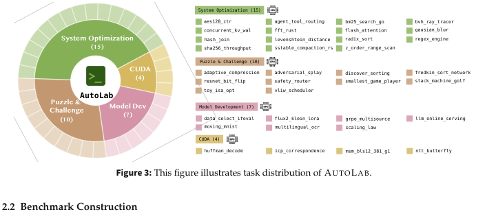
| Domain | Count | Examples | Scoring family | 关键复现约束 |
|---|---|---|---|---|
| System Optimization | 15 | flash_attention, radix_sort, hash_join, regex_engine |
log-stretch runtime | 统一 hardware/sandbox；必须超过 baseline；reference anchors 依赖标准化环境。 |
| Puzzle & Challenge | 10 | discover_sorting, toy_isa_opt, resnet_bit_flip |
anchored linear 或 log-stretch | 部分任务有 gates，例如 resnet_bit_flip 需 accuracy < 12%。 |
| Model Development | 7 | grpo_multisource, multilingual_ocr, scaling_law |
anchored linear quality metric | 需 GPU、训练脚本、held-out eval；grpo_multisource 有 VQA retention gate。 |
| CUDA | 4 | ntt_butterfly_cuda, msm_pippenger_bls12_381_cuda |
log-stretch runtime | 禁止 Thrust/CUB/cuBLAS/cuFFT 等第三方库；需要 H100 上 bit-exact/correctness checks。 |
任务 anchor 与 gates 来自 Appendix A.2；完整数值见 Figure/Table 导航中的 Table 2-4 crop。
| Model group | Models | API provider notes |
|---|---|---|
| Proprietary frontier | claude-opus-4.6, gemini-3.1-pro, gpt-5.4, grok-4-20 |
论文 Table 5 标注 provider：Azure AI Foundry、TokenRouter、xAI 等；具体 API 版本随时间可能变化，复现需锁定论文发布时接口。 |
| Open-weight side / provider models | qwen-3.6-plus, deepseek-v4-pro, glm-5, kimi-k2.6, hunyuan-3-preview, mimo-v2.5-pro, minimax-m2.7 |
论文没有测试 <200B small open-weight models，因为 benchmark 难度较高。 |
| Ablation variants | kimi-k2.5, minimax-m2.5, mimo-v2-pro, mimo-v2.5, deepseek-v4-flash, qwen-3.5-plus |
用于 generation delta、cost 和 harness ablation 等分析，不参与 main-set Dominance。 |
4. 实验结果与核心结论
整体上，claude-opus-4.6 以 Overall Avg@3 0.68、Best@3 0.76、Dominance 0.93 明显领先。第二名 gemini-3.1-pro 的 Overall Avg@3 为 0.50。论文最重要的解释不是“谁会写代码”，而是“谁能在长时间里持续评估、保留最好结果、继续探索并按时提交”。
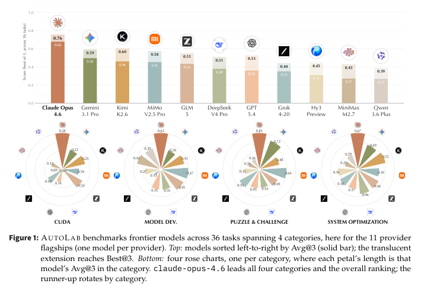
| Model | Overall Avg@3 | Overall Best@3 | Dominance | CUDA Avg | Model Dev Avg | Puzzle Avg | System Opt Avg | Interpretation |
|---|---|---|---|---|---|---|---|---|
claude-opus-4.6 | 0.68 | 0.76 | 0.93 | 0.38 | 0.63 | 0.85 | 0.67 | 四个 domain 全领先；trajectory 更长、更稳定。 |
gemini-3.1-pro | 0.50 | 0.59 | 0.62 | 0.22 | 0.36 | 0.72 | 0.49 | Puzzle 强，但 CUDA 与 model development 相对弱。 |
kimi-k2.6 | 0.46 | 0.60 | 0.62 | 0.25 | 0.42 | 0.48 | 0.52 | open-weight side 中强，Best@3 高于 Avg@3，波动较大。 |
mimo-v2.5-pro | 0.45 | 0.58 | 0.53 | 0.18 | 0.47 | 0.64 | 0.39 | model development 与 puzzle 较强，CUDA 弱。 |
glm-5 | 0.43 | 0.55 | 0.57 | 0.24 | 0.45 | 0.49 | 0.44 | 较均衡，但 instruction violations 在零分中较集中。 |
deepseek-v4-pro | 0.38 | 0.51 | 0.47 | 0.00 | 0.35 | 0.43 | 0.46 | CUDA 上许多 rollout 因长 reasoning 或 timeout 失败。 |
gpt-5.4 | 0.36 | 0.53 | 0.39 | 0.14 | 0.35 | 0.45 | 0.37 | 论文归因于 premature termination，而非完全缺乏 raw ability。 |
grok-4-20 | 0.35 | 0.44 | 0.42 | 0.18 | 0.13 | 0.53 | 0.38 | flash_attention case 中几乎不迭代，低端表现明显。 |
hunyuan-3-preview | 0.31 | 0.45 | 0.34 | 0.07 | 0.27 | 0.35 | 0.36 | timeout/context exhaustion 比例高。 |
minimax-m2.7 | 0.27 | 0.43 | 0.28 | 0.12 | 0.42 | 0.26 | 0.25 | model development 相对强，其他域低。 |
qwen-3.6-plus | 0.27 | 0.39 | 0.32 | 0.00 | 0.39 | 0.26 | 0.29 | Appendix C 显示相对 qwen-3.5-plus 回退。 |
重建自论文 Table 1 的 main set。为可读性只列核心列；完整 per-category Avg/Best/Dominance 见论文裁剪图。
FlashAttention case study
flash_attention 从 750 ms baseline 开始。claude-opus-4.6 约 40 分钟内通过 44 次 feedback-driven iterations 降到 18 ms，实现 42.4x speedup，并超过 100 ms reference。kimi-k2.6、gemini-3.1-pro、glm-5 达到 50-80 ms 后停滞。
失败模式比总分更有信息
作者人工检查 302 个 zero-score rollouts，分成 Timeout / Context Exhaustion、Capability Gap、Instruction Violation、Others。最突出的结论是 models 不会校准探索与剩余时间：有的过早提交，有的耗尽 budget 不提交。
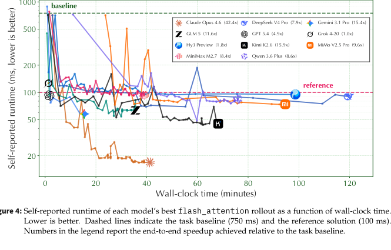
flash_attention 的 self-reported runtime vs wall-clock time。图中能看到持续 benchmark-edit loop 与早停/长思考失败的差异。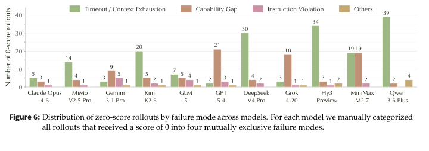
deepseek-v4-pro、hunyuan-3-preview、qwen-3.6-plus timeout 更突出；gpt-5.4 的 capability gap/早停问题更明显。Harness ablation 的含义
在 25 个 CPU tasks 上，作者比较 terminus-2、pi-mono 和修改过提示的 mini-swe-agent*。同一模型跨 harness 的 mean score 可移动最多 \(\Delta=0.43\)，说明 harness 不是无关实现细节。
Stability analysis
Appendix C.2 指出 capability 与 reliability 相关但不同。claude-opus-4.6 同时最高分且最稳定，\(\bar{\sigma}=0.099\)。高 variance 模型如果只报 Best@3，会被显著高估。
5. Figure / Table 导航
下面是本页使用的实际论文 page crops。裁剪来自 PyMuPDF 渲染页面，不是原始矢量图导出；数值表已在正文重建，图片仍建议作为视觉核对依据。
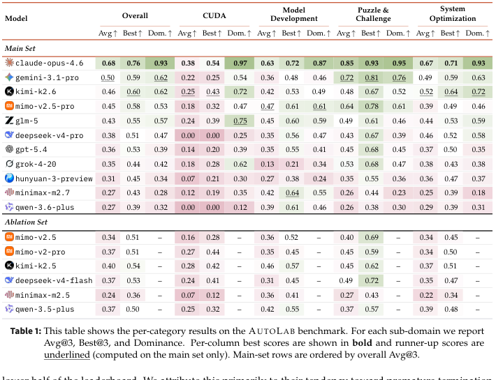
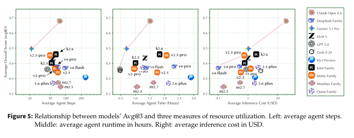
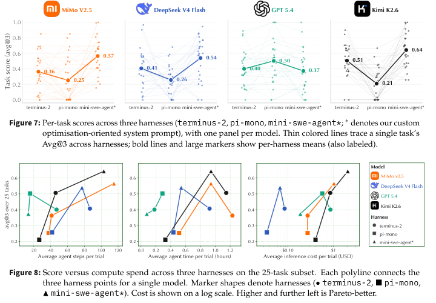
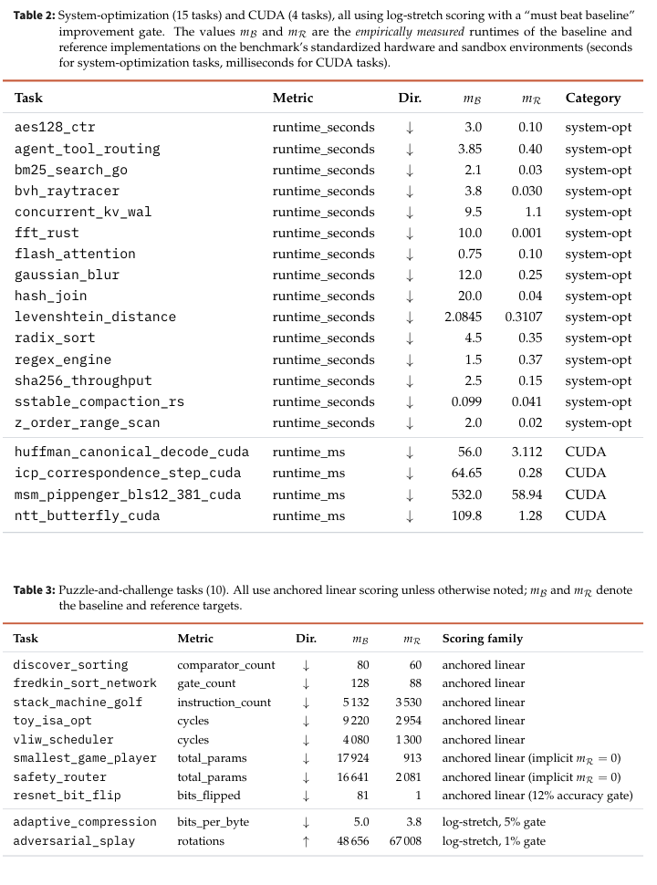
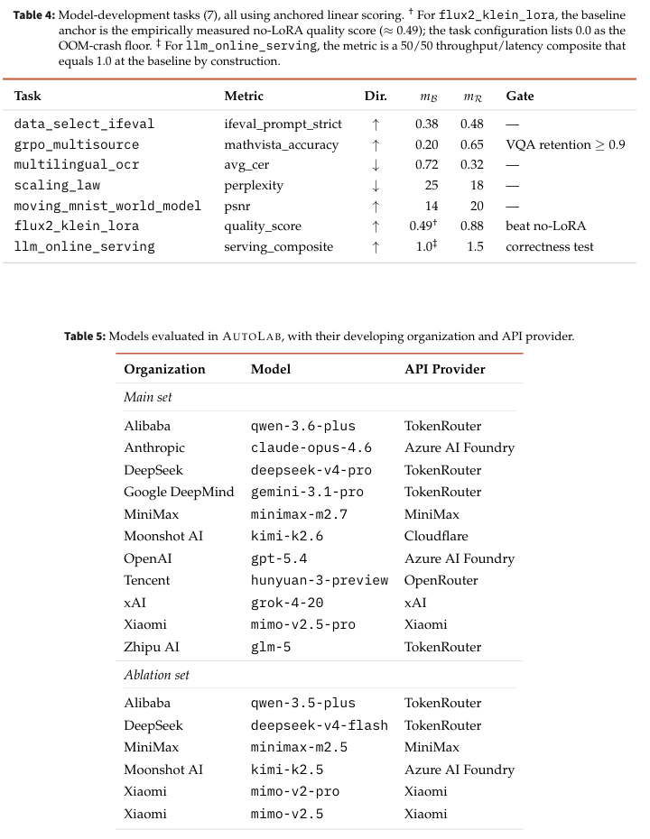
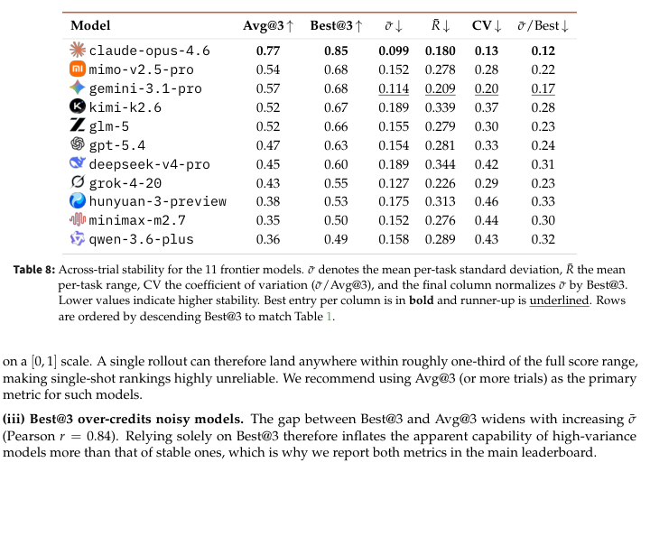
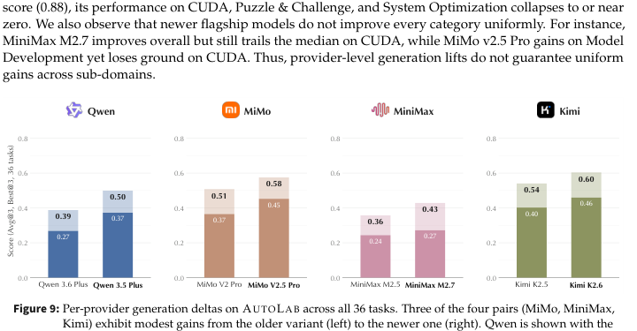
6. 复现清单
论文声称 open-source benchmark、evaluation harness 和 task artifacts。仅从 PDF 可确认宏观协议与 anchor values；要完全复现主表，需要同步代码仓库中的 task definitions、verifiers、harness 配置、API 模型版本和硬件环境。
最低可复现路径
- 获取
https://github.com/autolabhq/autolab，锁定论文对应 commit 或 release。 - 准备 HARBOR framework 与默认
terminus-2harness。 - 为 36 个任务构建 Docker/Modal environments，确认 CPU/GPU caps 与 task metadata。
- 对每个 model-task pair 运行 3 个 independent rollouts。
- 使用 Appendix A.2 的 anchors/gates，把 raw metrics 映射为 normalized score。
- 聚合 Avg@3、Best@3、Dominance，并保存 trajectories、agent steps、runtime、token/cost。
- 对 zero-score rollouts 做 failure-mode audit；如果要复现 Figure 6，需要人工标注或复刻作者标注协议。
复现风险
- proprietary model API 版本、provider routing、默认 decoding/timeout policy 可能漂移。
- long-horizon rollouts 成本高，GPU/CPU 性能差异会影响 runtime anchors。
- PDF 未给出所有 task TOML、完整 harness prompts、每个模型的 exact sampling parameters；需以开源仓库为准。
- Figure 6 的人工 failure categories 需要 reviewer agreement，否则结论可能受标注者影响。
| 复现对象 | PDF 中可见信息 | 仍需仓库/人工核对 |
|---|---|---|
| 主榜单 Table 1 | 模型列表、Avg@3、Best@3、Dominance、四域分数。 | 所有 raw trajectories、随机种子、API response settings。 |
| Task scoring | 公式、anchors、direction、部分 gates。 | verifier implementation、local evaluator 与 held-out set。 |
| Harness ablation | 25-task subset、三种 harness、修改过的 mini-swe-agent prompt 的核心行为要求。 | 完整 system prompt、agent runtime policy、tool definitions。 |
| Failure analysis | 四类 failure modes 与模型级分布。 | 302 个 zero-score trace 的原始标注与一致性检查。 |
7. Reviewer Critique
这篇论文的价值在于把“长时程闭环优化能力”从宏大口号变成可执行 benchmark，并且把 trajectory、成本和失败模式纳入分析。但它仍然是 benchmark paper，结论边界主要受任务集合、harness 固定方式、API 漂移和人工标注影响。
Strengths
- 任务设计贴近真实工程与研究循环，不是孤立 coding puzzle。
- 连续评分能捕捉 partial progress，对高难任务比 pass/fail 更有诊断性。
- Appendix 给出 anchors/gates，复现比只给 leaderboard 更透明。
- failure-mode 与 harness ablation 把 agent system 层问题显式暴露出来。
- 报告 cost、runtime、steps，避免把 benchmark score 与资源使用割裂。
Weaknesses
- 只固定一种 default harness 不能完全隔离 model capability；Section 4.3 反而显示 harness 足以改变排名。
- 36 个任务虽然多样，但仍可能偏向作者熟悉的 systems/ML engineering workflows。
- reference anchors 依赖特定 hardware/sandbox，跨环境复现需要重新校准。
- proprietary frontier models 的名称、API 和 provider 行为未来可能不可复现。
- zero-score failure labels 是人工分类，论文摘要未说明标注一致性指标。
Missing ablations
- budget scaling：同一模型在 2/4/8/12 小时下是否出现临界点？
- explicit time-awareness prompt 是否能显著减少 premature termination 与 timeout？
- best-so-far submission policy、auto-checkpointing、rollback memory 对结果贡献多大？
- local evaluator 噪声与 held-out verifier gap 是否导致 overfitting？
- 不同 decoding parameters 对 long-horizon persistence 的影响。
Possible failure modes of the benchmark
- agent 可能学会优化 local evaluator 而不是真实 held-out metric，尽管 sealed verifier 会缓解。
- benchmark 变流行后，模型训练数据可能包含 task artifacts，后续需要版本化和 contamination checks。
- 高成本评测容易限制社区复现，使 leaderboard 被少数有算力/API 额度的组织主导。
- 某些任务的 scoring function 与真实工程价值之间可能存在 reward mismatch。
8. 对我的研究方向的启发
如果关注 RLVR、agent self-evolution、tool use、questioner-solver、replay、diversity 或 evaluation，这篇论文最有用的不是某个模型排名，而是它把“持续迭代行为”变成了可观测、可奖励、可失败归因的对象。
把 persistence 变成训练信号
不要只奖励 final answer。可以把 benchmark/edit/eval/rollback/submit 的事件序列作为 RLVR 或 process reward 的对象，明确奖励“有效继续探索”和“保留 best-so-far”。
Replay 应该保留失败轨迹
302 个 zero-score rollouts 的手工分析说明失败轨迹很有价值。replay buffer 不应只收成功样本，也要保存 timeout、instruction violation、discarded good solution 等可学习 failure signatures。
Harness 是变量，不是背景
Section 4.3 说明 harness choice 会改变 ranking 和 cost curve。做 agent 评测或 self-evolution 时，应把 harness lineage、prompt、tool policy 当作一等实验变量记录。
Questioner-solver 可借鉴 sealed verifier
让 questioner 生成 local feedback，但最终由 held-out verifier 打分，可以缓解 reward hacking；同时允许 solver 在 local evaluator 上探索。
Diversity 不只在答案上
需要多样化 exploration strategy、tool-call cadence、checkpoint policy 与 final-submission timing。AUTOLAB 的失败模式显示同质化“长思考”或“早提交”都会伤害成绩。
评测要同时报 mean 与 stability
Avg@3、Best@3、\(\bar{\sigma}\)、CV 一起报告，比单次成功更能反映 agent 是否可靠。对自进化系统尤其要防止 Best@k 过度奖励高方差策略。